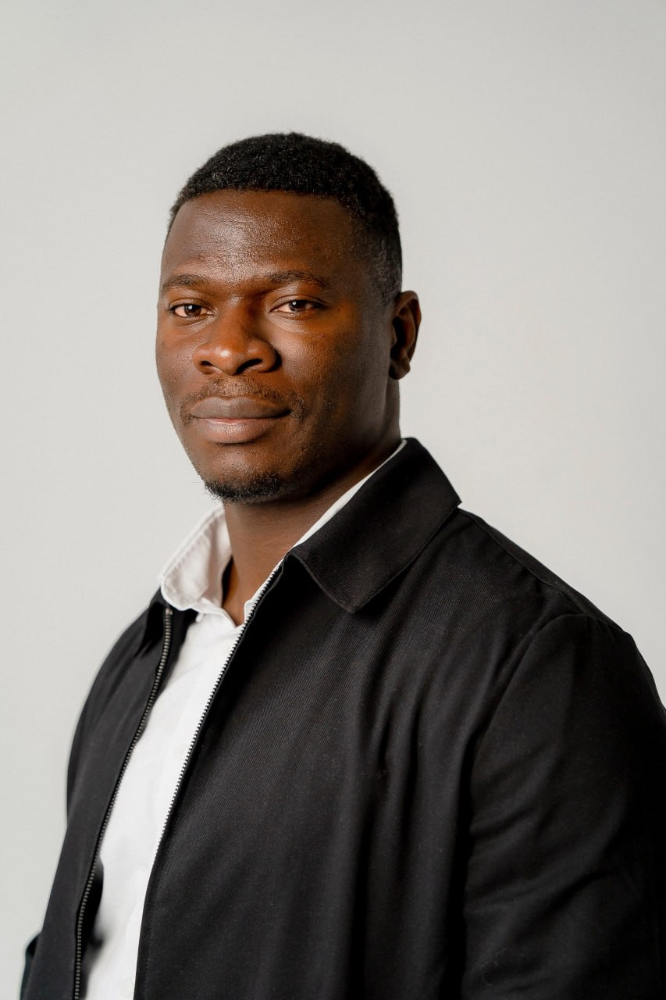
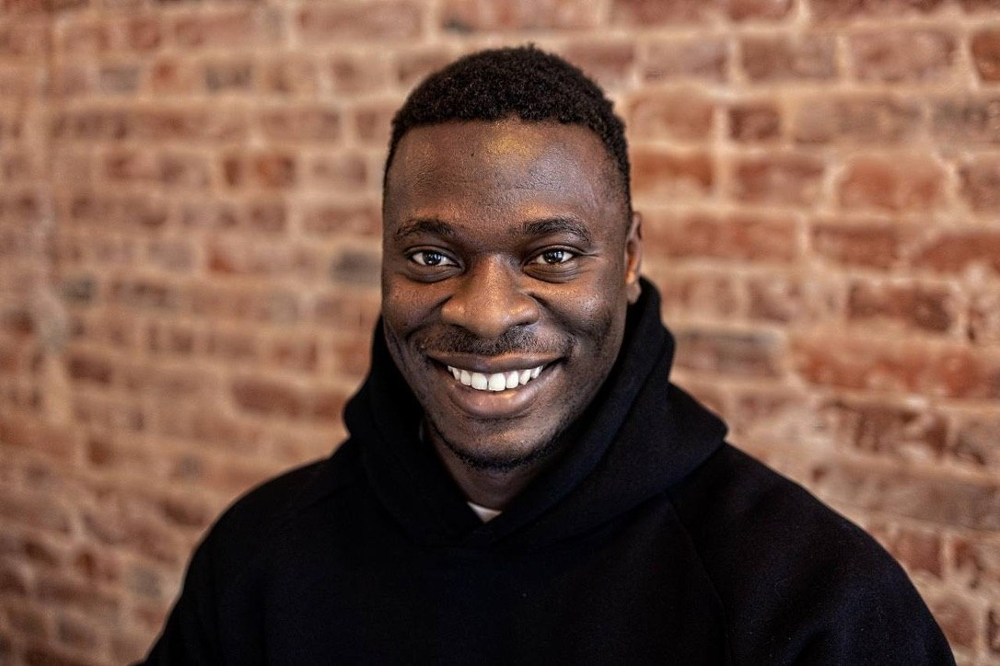

Студентам
Хотите подтянуть французский для учёбы или карьеры? Индивидуальные уроки помогут достичь ваших целей.
Bonjour ! 👋 Уроки французского онлайн
Меня зовут Кристиан. Я носитель французского языка и сертифицированный преподаватель FLE. Помогаю русскоязычным взрослым, подросткам и детям понимать живой французский, уверенно общаться и двигаться к своим целям в комфортном темпе.


À propos
Меня зовут Кристиан. Я носитель языка и ваш онлайн-преподаватель французского как иностранного (FLE). Преподаю французский больше 10 лет, из них 8 лет онлайн, и с удовольствием передаю ученикам свои знания и любовь к этому прекрасному языку и его культуре.
Мой педагогический подход
Я придерживаюсь коммуникативного подхода и метода погружения. Главное в изучении языка — практика и разговор. Мы работаем с устной и письменной речью через обсуждения, ролевые игры, анализ текстов и многое другое. Я помогаю не только выучить французский, но и понять франкоязычную культуру.
Изучение французского становится увлекательным и интересным.
Каждый ученик уникален: программа строится под ваши потребности, цели и темп.
Учите французский, не выходя из дома, в удобное для вас время.
Индивидуальное сопровождение и помощь, в том числе между занятиями.
Pour qui ?
Хотите подтянуть французский для учёбы или карьеры? Индивидуальные уроки помогут достичь ваших целей.
Работаем над практическими аспектами языка для повседневной, профессиональной и социальной жизни.
Трудно даётся французский в школе? Уроки в вашем темпе помогут быстро и эффективно прогрессировать.
Разбираем формат экзамена, выполняем экзаменационные задания и тренируем все части.
Les cours
Все уроки проходят онлайн, один на один с преподавателем. Первый урок бесплатный: познакомимся и обсудим ваши цели.
Бесплатно
3 200 ₽ / занятие
24 000 ₽ / 8 занятий
Не знаете свой уровень? Пройдите бесплатный тест A1–B2 →
Полезные материалы, живой французский и новости. Подписывайтесь — это бесплатно.
La boutique
Пособия в электронном виде. Чтобы купить, напишите мне в удобный мессенджер: я пришлю реквизиты и файл.
Comment acheter
Нажмите «Купить» на карточке и выберите удобный мессенджер.
Текст сообщения уже готов — просто отправьте его.
Я пришлю реквизиты для оплаты.
Отправлю файл сразу после оплаты.
Témoignages
«Занимаюсь с Кристианом 7 месяцев, и за это время удалось восстановить мой полностью забытый французский настолько, что я успешно сдала DELF B2!
Изначальный запрос был просто вспомнить язык, на этом этапе мы разговаривали на простые темы и повторяли грамматику. Мне понравилось дружелюбное, вежливое отношение Кристиана, его желание всё объяснить и дать понятные примеры. Потом мы целенаправленно готовились к DELF B2, выполняли экзаменационные задания, Кристиан давал мне задания на дом и делился собственным опытом сдачи экзамена C2. А ещё поддерживал мою веру в собственные силы, что мне очень помогло.
Сейчас мы продолжаем занятия, много говорим, смотрим интересные видео, изучаем особенности разговорного языка и сленг. В общем, мой запрос менялся, но занятия с Кристианом мне нравились на каждом этапе. От души рекомендую занятия с этим преподавателем!)»
«Изначально обращалась для подготовки к DELF B2. После пары занятий я поняла, что у меня есть шанс сдать экзамен, поэтому в кратчайшие сроки Кристиан дал отличную экзаменационную базу. Меньше чем за месяц я подготовилась к DELF B2 и успешно его сдала.
После этого моя учебная программа с Кристианом сильно поменялась, так как у меня страдал обычный „человеческий“ французский. Кристиан очень разносторонний преподаватель, таким образом, мы изучили не только язык улиц, но и французскую кухню. Короче говоря, с каким бы запросом вы ни обратились, Кристиан с лёгкостью подстроится под вас и всегда поддержит! Спасибо большое за то, что всегда помогали с моими быстро меняющимися просьбами :)»
«Я занимался французским языком с Кристианом на протяжении полутора месяцев, и это был невероятный опыт! С первого занятия я понял, что нашёл настоящего профессионала. Уроки всегда были тщательно подготовлены, структурированы и интересны. Преподаватель уделял внимание каждому аспекту — от грамматики до произношения, помогая мне понять и полюбить французский язык.
Особенно хочу отметить индивидуальный подход. Кристиан подстраивал уроки под мои цели и уровень, всегда находил время объяснить сложные моменты и мотивировал меня к дальнейшему развитию. Атмосфера на занятиях была дружелюбной и поддерживающей, что помогало чувствовать себя уверенно.
За два месяца я сделал огромный прогресс в языке и теперь с уверенностью могу продолжать обучение. Искренне рекомендую Кристиана всем, кто хочет выучить французский язык!»
«Кристиан — очень внимательный и профессиональный преподаватель французского языка. Занятия проходят полностью на французском, благодаря чему быстрее привыкаешь к речи и начинаешь увереннее использовать язык в разговоре.
Кристиан всегда готов ответить на любой вопрос, подробно объяснить непонятную тему и помочь разобраться даже в сложных моментах. Благодаря этому на занятиях создаётся комфортная и спокойная атмосфера, в которой действительно приятно учиться.
Отдельно хочется отметить разнообразие материалов и тем для обсуждения — занятия всегда проходят интересно и полезно. Благодаря такому подходу заметно улучшаются разговорные навыки, понимание французской речи и словарный запас.»
«Хочу поделиться своим мнением о Кристиане как о прекрасном преподавателе. Нашёл подход с первого занятия. Обучение сразу дало свои плоды. С момента начала занятий (примерно два года) значительно повысился уровень владения языком. Появилось стремление изучать французский только благодаря урокам с Кристианом. Его энтузиазм заражает.
А также хочу отметить вовлечённость в процесс. Всегда можно написать преподавателю во внеучебное время и получить помощь в обучении. Спасибо за интересные занятия и любовь к языку!!!»
«Отличный преподаватель, с которым очень интересно заниматься. У Кристиана своя авторская методика, благодаря которой можно увлекательно и эффективно заниматься французским. С каждым разом говорить по-французски всё легче, не только с ним, но и в жизни. Спасибо большое Кристиану за терпение и желание помочь. Всем советую!»
Questions
С бесплатного пробного урока: познакомимся, обсудим ваши цели, и я подберу подходящий формат занятий. Напишите мне в Telegram или WhatsApp.
Пройдите бесплатный тест на уровень A1–B2. Уровень также уточним на пробном уроке.
Со взрослыми, подростками и детьми: со студентами, с теми, кто живёт во Франции или в другой франкоязычной стране, со школьниками и с теми, кто готовится к экзаменам DELF/DALF.
Разовое индивидуальное занятие стоит 3 200 ₽. Абонемент на 8 занятий — 24 000 ₽, то есть 3 000 ₽ за урок. Первый урок бесплатный.
Онлайн, индивидуально, в удобное для вас время. Основа уроков — практика и разговор: обсуждения, ролевые игры, работа с текстами и видео.
Нажмите «Купить» на карточке материала и напишите мне в удобный мессенджер. Я пришлю реквизиты, а после оплаты — сам материал.
Prêts à commencer ?
Напишите мне — я отвечу на ваши вопросы и помогу выбрать подходящий формат занятий. Первый урок бесплатный.
Текст сообщения подставится автоматически. Если этого не произошло, просто вставьте его в чат: он уже скопирован.